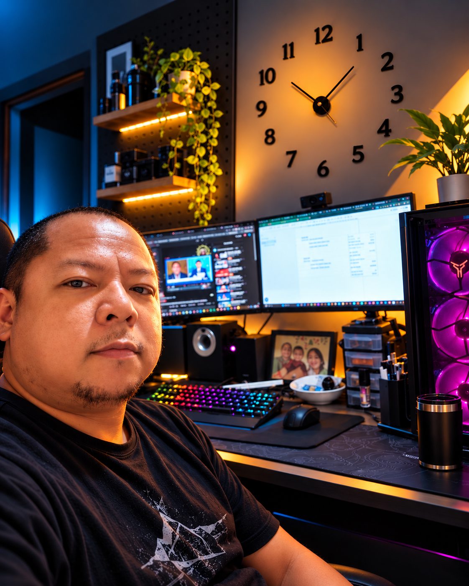

Funnel Building
Landing pages, sales funnels, checkout experiences, and conversion-led structure.
CLICKFUNNELS · GOHIGHLEVELConversion-focused funnels. Intelligent automations. Digital experiences crafted with precision.
Real-world funnel experiences, crafted for clarity, conversion, and impact.
A polished interface means more when the system behind it works.
Design, development, and automation connected into one practical workflow.
Landing pages, sales funnels, checkout experiences, and conversion-led structure.
CLICKFUNNELS · GOHIGHLEVELCRM workflows, follow-up sequences, integrations, and business process logic.
GHL · KEAP · N8NResponsive visual experiences with purposeful motion and custom interactions.
HTML · CSS · JAVASCRIPTI'm a funnel builder and automation specialist creating digital experiences that look intentional and work intelligently. I combine visual design with practical systems thinking—so every page and workflow has a job to do.
LET'S WORK TOGETHER ↗
Have a funnel, website, or workflow in mind? Let's turn the idea into a working experience.
START A CONVERSATION ↗